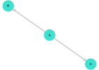

Dagitty.jl
This project started as rewrite of Dagitty R package on Julia language. The main motivation was porting of "Statistical Rethinking" book examples to Julia, which could be found on this website: shmuma.github.io/rethinking-2ed-julia. So, methods from Dagitty R package are being ported on "as needed" basis.
At the moment, package provides the following functionality:
- Declaration of DAGs as set of labelled nodes and edges
- Drawing of those DAGs using GraphPlot package
- Check for D-separation between two sets of nodes conditioned on third set of nodes
- Discovery of pairwise conditional independent variables.
Basic examples
julia> g = DAG(:A => :D, :A => :M)
DAG: {3, 2} directed simple Int64 graph with labels [:A, :D, :M])
# Draw DAG
julia> drawdag(g)
julia> implied_conditional_independencies(g)
1-element Vector{ConditionalIndependence}:
ConditionalIndependence(:D, :M, [:A])